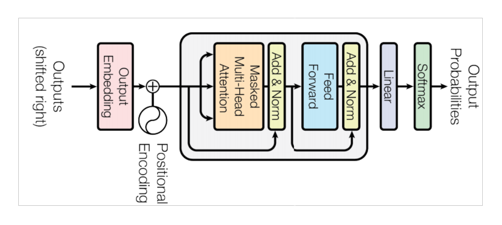
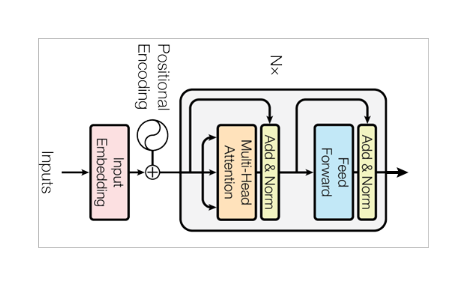
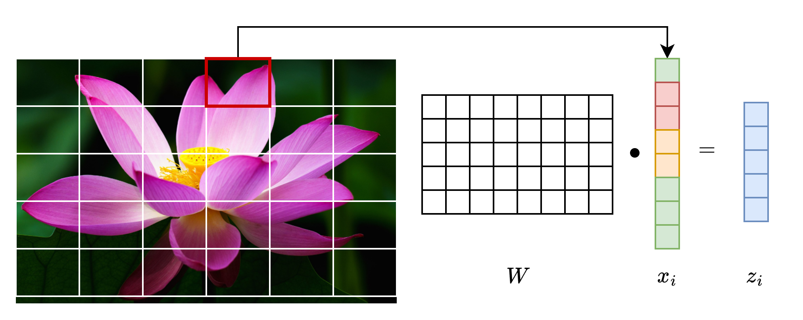
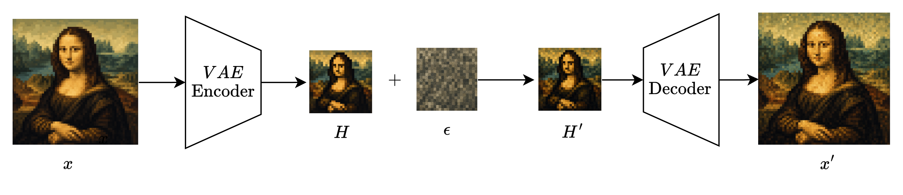
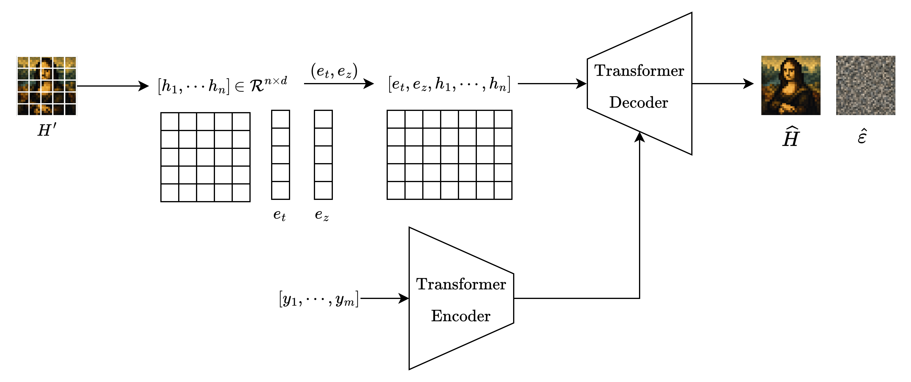
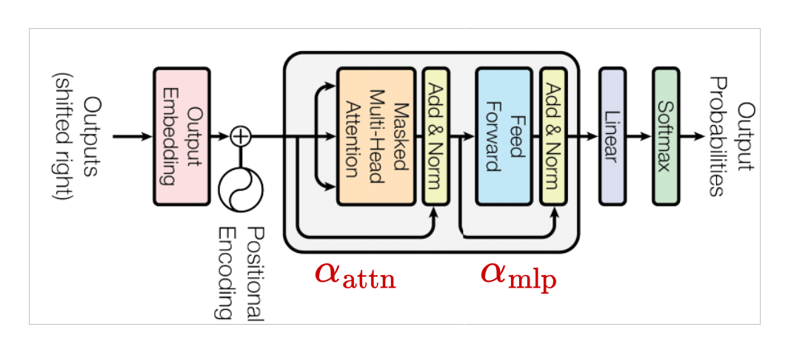
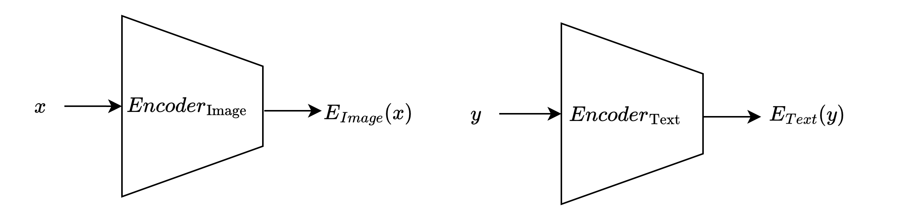
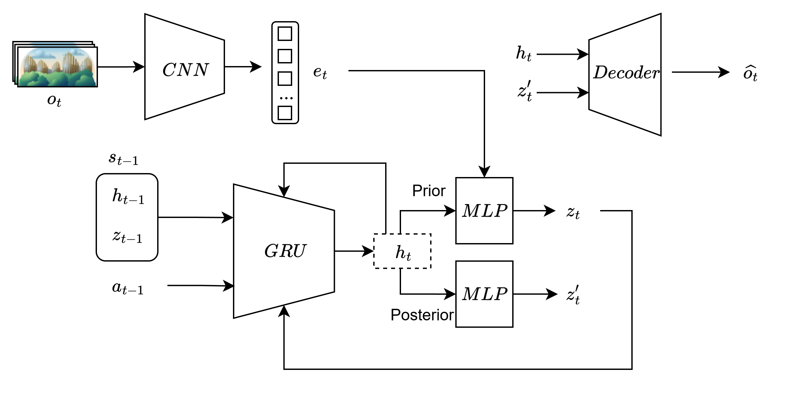
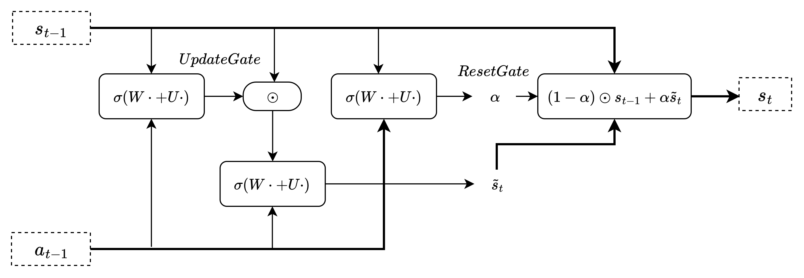
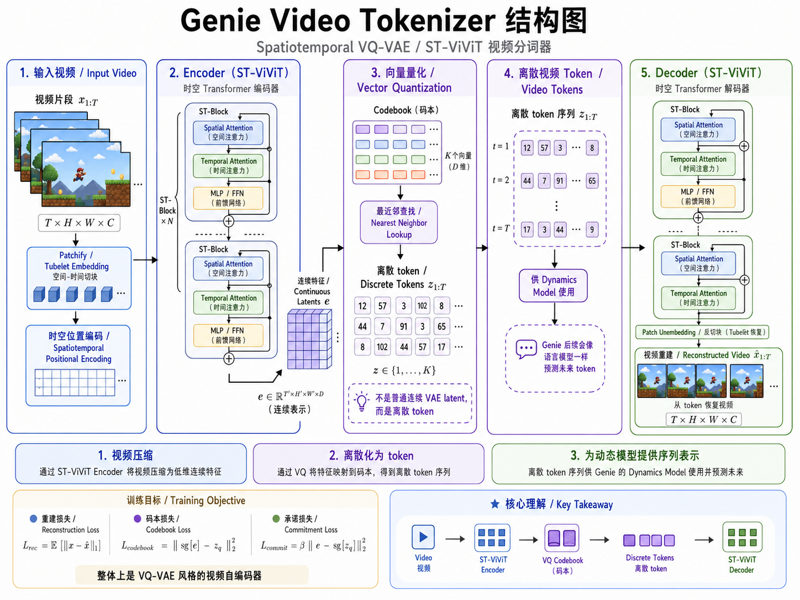

生成式大模型¶
LLM¶
GPT¶
Generalized Pre-trained Transformer (Decoder-only Transformer)

- 用于文本生成
BERT¶
Bidirectional Encoder Representations from Transformers (Encoder-only Transformer)

- 用于文本理解
多模态生成¶
ViT¶
Vision Transformer (视觉变换器)

- 将一张图片切成很多小块，将每个图像块当作一个token，再交给Transformer Encoder处理
DiT¶
Diffusion Transformer
- 在扩散模型中使用Transformer去噪

- DiT 不直接对原图像进行加噪，而是对图像潜变量加噪

- \(e_t\)：时间步t得到的位置编码 \((\sin(\omega_1 t), \cos(\omega_1 t), \cdots, \sin(\omega_{\frac{n}{2}} t), \cos(\omega_{\frac{n}{2}} t))\)
- \(e_z\)：分类特征嵌入向量
- \(h_i\)：是第 \(i\) 个潜变量patch的嵌入向量
- \(y_i\)：文本描述信息
损失函数
- DiT 一般将64张图片作为一个Batch计算损失
AdaLN
Adaptive Layer Normalization (自适应层归一化)
-
普通归一化层：
\[ \text{LN}(x) = \frac{x - \mu_x}{\sqrt{\sigma^2 + \epsilon}} \]\[ \text{LN}_{\gamma, \beta}(x) = \gamma \odot \text{LN}(x) + \beta \]- \(\gamma,\beta\) 是可学习参数，对所有样本都相同。
-
AdaLN 层归一化层：
\[ \text{AdaLN}(x;c) = (1+\gamma(c)) \odot \text{LN}(x) + \beta(c) \]\[ (\gamma(c),\beta(c)) = \text{MLP}(c) \] -
\(c\) : 全局条件变量，\(c = e_t + e_z\)
- \(\gamma(c)\) : 归一化系数，表征各通道强弱
- \(\beta(c)\) : 归一化偏置，表征各通道偏移量
-
使用MLP计算 \(\gamma(c),\beta(c)\)，不同时间步或类别参数不同
-
AdaLN-Zero
- DiT 不仅自适应归一化，还自适应残差分支的门控参数，zero代表初始化为0

VLM¶
Vision-Language Model (视觉语言模型)
- 表征对齐型VLM
- 生成式VLM
CLIP¶
Contrastive Language-image Pretraining 语言图像对比预训练，寻找文本和图像共同的潜空间

- \(y\) 是文本描述，\(x\) 是图像描述
- \(z_t\) 是 \(y\) 的嵌入向量，\(z_i\) 是 \(x\) 的嵌入向量
- \(Encoder_{text}\) 一般使用Transformer, \(Encoder_{image}\) 一般使用Vision Transformer
训练
DALLE2¶
在文本和图像相同的潜空间中做条件扩散生成
- \(y\) 是文本描述
- \(\hat{x}\) 是生成的图像
Diffusion Prior¶
学习文本描述 \(y\) 条件下的图像描述 \(z_i\) 的概率分布 \(p(z_i | y)\)
- 实际训练时会将 \(y\) 和 \(z_t\) 同时作为输入， \(y\) 作为细节， \(z_t\) 作为全局信息
Diffusion Decoder¶
学习图像描述 \(z_i\) 条件下的图像 \(x\) 的概率分布 \(p(x | z_i)\)
- 使用CLIP生成的图像描述 \(z_i\) 和对应的 \(x\) 作为训练数据。
上采样器¶
- 将低分辨率图像分两次扩散上采样，这两个采样器也是单独训练的
3D生成¶
LRM¶
Large Reconstruction Model 大重建模型
原生3D潜扩散¶
多视角扩散¶
Zero-Shot¶
World Model¶
World Model
- \(o_t\): 观察
- \(a_t\): 动作
- \(s_t\): 潜在世界状态
- \(p(s_{t+1}|s_t, a_t)\): 模型更具当前状态和动作预测下一个世界状态
潜在动力学模型¶
Latent Dynamics / State-Space World Model
基本思想 ： 世界模型不直接在像素空间理解世界，而是将世界压缩成隐藏状态 \(s_t\) ，然后学习动作如何改变状态。
- 压缩世界：
- 学习世界变化：
- 渲染观测：
RSSM¶
Recurrent State-Space Model （循环状态空间模型）
- RSSM将世界表示成：
- \(h_t\) 是确定性状态，代表历史信息，通常由循环神经网络得到。
- \(z_t\) 是随机状态，由随机采样得到，如 \(z_t \sim p(z_t | h_t) = \mathcal{N}(\mu_t, \sigma_t^2)\)。
状态空间模型
- 状态空间模型：世界分为隐藏状态 \(s_t\) 和可观察量 \(o_t = g(s_t)\)。
- 概率状态转移：\(s_{t+1} \sim p(s_{t+1}|s_t, a_t)\)
- latent representation：潜在表示，将可观察量编码为潜在表示 \(z_t\)。
- partial observability：智能体只能观察到部分状态，需要结合历史信息进行决策。
PlaNet

PlaNet网络架构
- GRU学习 \(p(h_t | h_{t-1}, z_{t-1}, a_{t-1})\) 。
- Prior MLP 学习 \(p(z_t | h_t, e_t)\) 。
- Posterior MLP 学习 \(q(z_t | h_t)\) 近似 \(p(z_t | h_t, e_t)\) 。
- Prior和Posterior输出的是 \(\mu 和 \sigma\) 。
- 训练时GRU输入 \(z_t\) ，推理时输入 \(z_t^\prime\) 。
-
损失函数：
\[ \mathcal{L} = - \mathbb{E}_q[\log p(z_t | h_t, e_t)] + D_{KL}(q(z_t | h_t) \| p(z_t | h_t, e_t)) \]

GRU网络架构
Model-Based RL¶
基于世界模型的强化学习，智能体基于世界模型做决策
DreamerV3
Action-Conditioned Video World Model¶
Genie¶
Video Tokenizer¶

Latent Action Model¶
Dynamic Model¶
GameGen
Agent¶
MoE
稀疏混合专家模型
Router和Top-k路由 Expert FFN Load Balancing Loss Expert Parallelism Token丢弃和容量限制
RAG
Embedding模型 向量检索和ANN Chunk切分 Hybrid Search Cross-Encoder Reranker Query Rewrite Context构造 引用和事实性评估
Agent ReAct
Tool Calling ReAct循环 状态管理 短期和长期记忆 任务分解 计划、执行与反思 验证器和错误恢复 多Agent协调 权限控制和沙箱
Agent决定如何行动。 世界模型预测行动会导致什么结果。 完整智能系统通常需要两者结合。
经典世界模型
RSSM/Dreamer
HMM和状态空间模型 POMDP Variational Inference RSSM ELBO Latent Imagination Actor-Critic Model-Based RL
表征预测型
JEPA V-JEPA-2
Self-Supervised Learning Masked Prediction Target Encoder和EMA Joint Embedding 表征坍塌 潜在空间预测 Action-Conditioned Prediction
可交互式世界模型
Genie Cosmos
Video Tokenizer 时空Transformer 自回归视频生成 Video Diffusion和Flow Matching Latent Action Model Action Conditioning 长期时序一致性 仿真数据生成
VLA